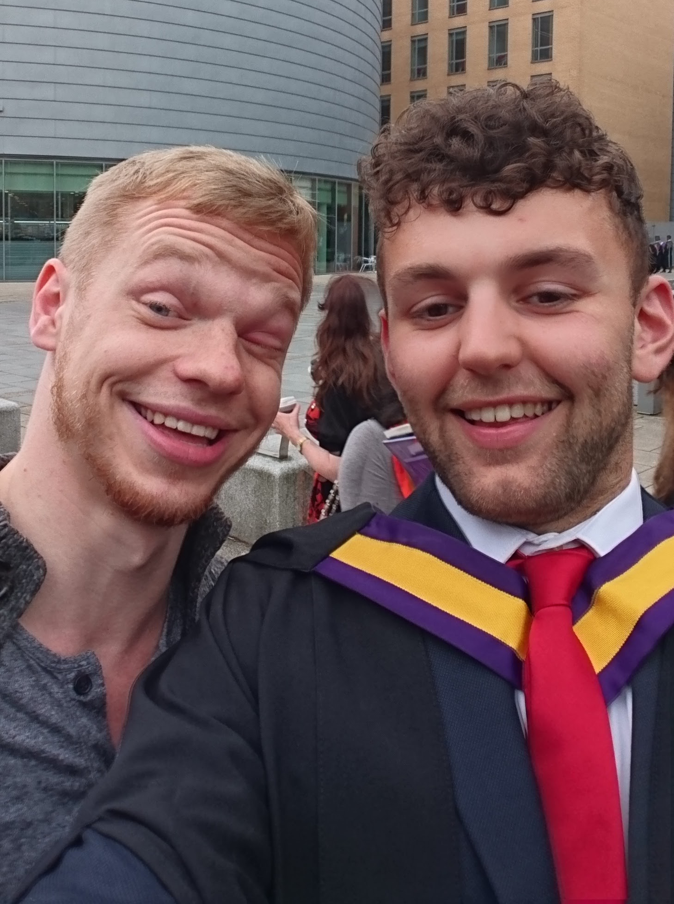

| How I became interested in web development | |
|---|---|
|
Date: 25/07/21
This is the story of how and why I began getting into coding, programming, and web development. It all started back at the beginning of May (2022). I hadn't talked to Pedro (or 'Petras' as he's officially called) for years. We met way back at the University of Manchester in 2013. We were both studying the same course there, Social Anthropology. We became good friends there, however, just before the course's end in 2016, Pedro dropped out to pursue a career in technology. ...(continued)... Pedro had always been into technology and he even tried making his own app while at University but at the time I wasn't really into all that stuff nor did I understand it very well. Just after the course ended in 2016 Pedro returned to Lithuania, where he's from, and then went on to live abroad in Australia for a few years. As a result we lost contact. I sent him messages every now and again and would get the ocasional reply, or I would hear about him through friends, but that was it. I presumed I was to never know of him again. Fast forward to 2022 and finally we get back in touch. This time, the contact was initiated by him. From the end of 2018 to the end of the academic course in 2022 I taught English in the northern Spanish city of Burgos. However, I realised I was beginning to tire of the job and nor was it leading to anywhere professionally. Just endless academic course cycles of teaching disinterested kids and teenagers in the afternoons, only getting paid for the hours I was physically present in the classroom. Not great. So at the end of 2021 I started preparing to get out of that world: redoing my CV, researching different potential sectors I could work in, updating my LinkedIn etc. I applied to several positions and in fact almost accepted an offer I got (just the one), but apart from that one instance I didn't have much luck or much idea of what I really wanted to do. When I posted my CV on LinkedIn I was suprised to get a reply from one particular person: Pedro. He sent me a message saying he had seen I was looking for new work and that I should consider coding/programming. After talking a little bit I said 'Thank you very much!' and quietly ignored his suggestion. Honestly, I didn't have much idea about programming and the only ones I had were of pages of boring, confusing and strange looking code and complex mathematics. Frankly I didn't see myself doing it. But we carried on talking via LinkedIn and decided to have a video call to catch up properly around the first week of May. Pedro is an enthusiastic and (can be) a very persuasive speaker. I think that if programming ever failed him, he would find a job in sales no-problem. We began the call catching up on everything that had happened in the last 7 years, his time in Australia, my time in Spain, which led us up to my current job-searching situation and my unhappiness with English teaching. That's when we got onto the subject of programming and Pedro put his sales skills to work. I wanted to know why he was so convinced I should do programming. Without missing a beat he started a forty five minute speech (prompted by questions I had) about all things programming: the good pay; the high likelihood of working remotely; potentially flexible working hours; the really high demand and relatively low supply of skilled workers; it's pandemic proof; the low entry barrier; the variety of areas you can work in; the fun problem-solving and creative aspects to it. He talked about the differences between front and back-end, a typical 'day in the life' of a programmer, and he gave me some resources to get started. I think the part that really got to me, in regards to my question "But isn't coding boring?" was when he said It's not about the code, it's about the projects you do and what results from the code you write. That's when I started seeing programming differently and decided to give it a shot. It isn't just about writing tedious code on a screen, it's about making or doing something with that coding. Code is a tool. So in my free time I started investigating this world and all the terms I came across, takling to other friends who worked in this world, and found a very beginners-friendly web development course on Skillshare which I thought would be the perfect introduction I needed to this world. I gave myself a month to get through it (until earlier June time), try out the practice projects, and learn as much as I could. Due to personal circumstances I couldn't do it within that time but by the end of June I had pretty much completed the course and I couldn't say I disliked it. In fact, there were genuinely pleasurable moments while doing the course. So, I decided to continue, which is why you're reading this today. In the next blog I will upload photos and videos of my progress during that course and beyond. |
|
| 
At my graduation (2013). Pedro with an infected eye and me with a beard. The last time I saw Pedro in person. |
|